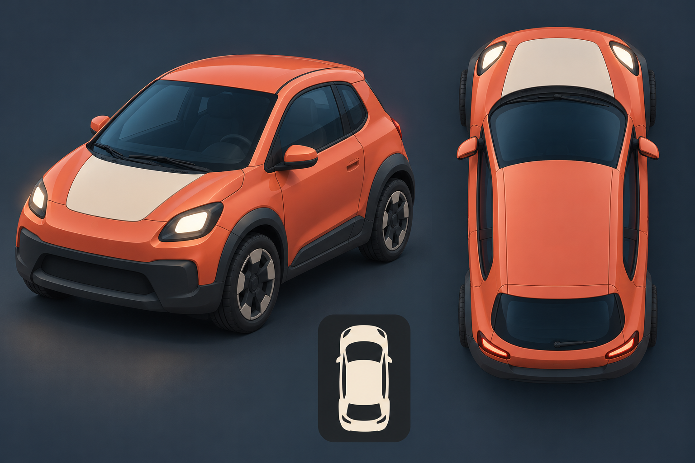
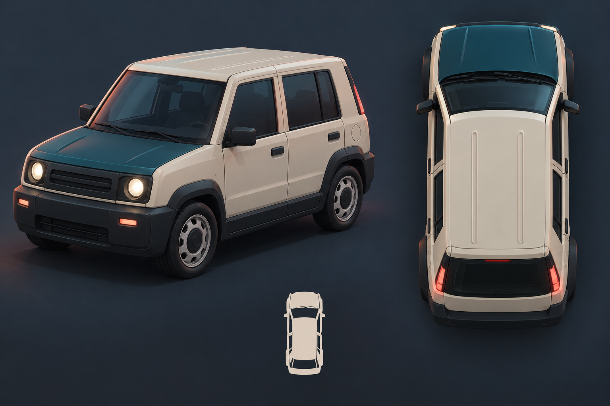
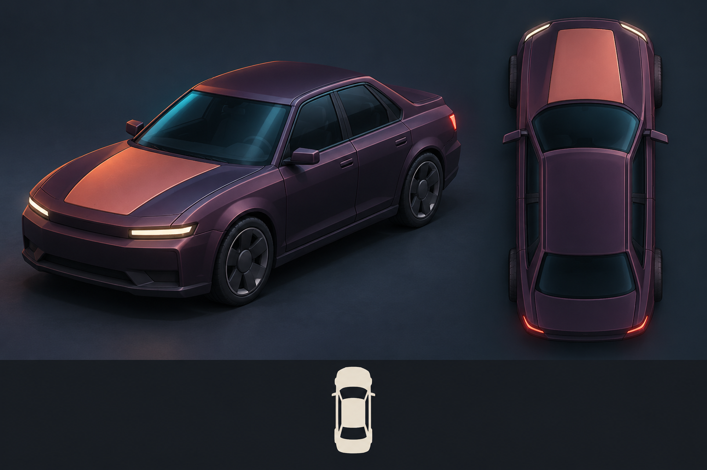

A — Latch compact
Short rounded three-door commuter. Coral paint, petrol glass and an ivory hood panel. The most compact option, with nominal dimensions matching the S04 visual fixture.
VEHICLE · 9 OCTOBER 2026 · OWNER SELECTION PENDING
Smooth chunky shapes for the darker vibrant cyberpunk city. Each sheet shows a three-quarter view and an overhead roof view, front pointing up. Recommendation: B — Crate, for its clear ivory roof and squared hatch.
Original unbranded generated concept art. Dimensions are provisional design suggestions, not measured image geometry or changes to handling/collision. Detailed Blender modeling waits for Regner's selection.
Illustrative crops of the raster roof views, reduced to roughly the predicted car length at 47 m / vertical FOV 42° / 1280 × 800. View at 100% browser zoom. These are concept thumbnails; roof elevation, camera perspective and lighting need the actual Godot preview. Crop widths reflect generated proportions.



Short rounded three-door commuter. Coral paint, petrol glass and an ivory hood panel. The most compact option, with nominal dimensions matching the S04 visual fixture.
Boxy five-door neighborhood runabout. Broad ivory roof, short petrol hood, upright rear hatch and chunky rubber bumpers. Strongest top-down visual identity.
Low four-door street sedan. Aubergine body, coral hood inset, a longer bonnet and separate trunk. Best choice for a more imposing first car.
| Deliverable | Status |
|---|---|
| Three raster concepts, original prompts, visual self-review | Complete |
| Owner concept selection | Pending |
| Blender source, wheels/markers, export, imported saved preview | After selection |
| Gameplay, collision/seat/network integration | External integrator |
No engine screenshot, gameplay acceptance or production-completion audit is claimed. Original prompts use built-in imagegen; no real brands or external vehicle assets were requested. See the brief for provenance and checks.